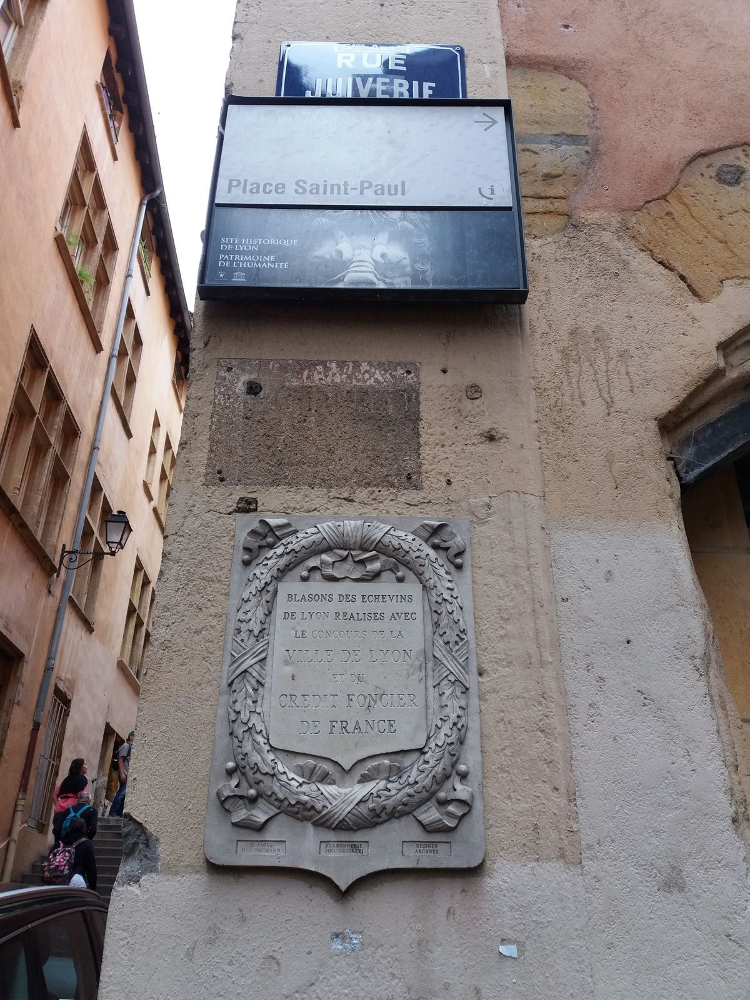
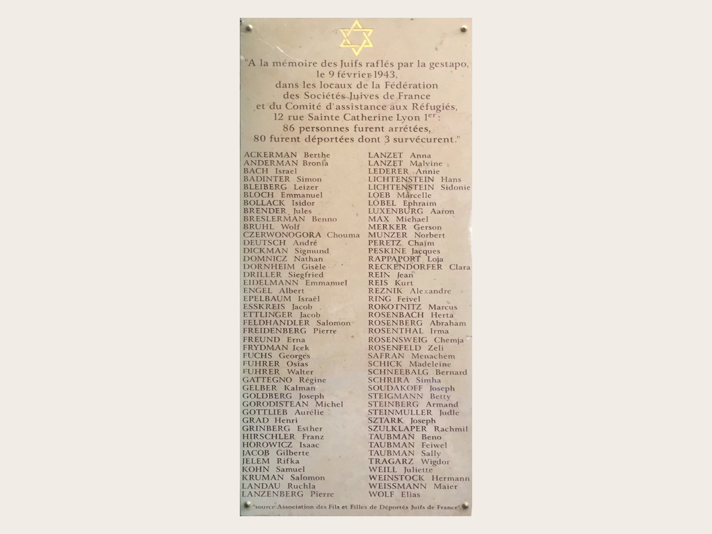

Home / Jewish Lyon guide / Rue Juiverie, Lyon
Rue Juiverie, Lyon
the street that kept the name
Rue Juiverie runs through the Vieux Lyon, in the 5th arrondissement. It takes its name from the Jewish community that lived in medieval Lyon. The community is long gone. The name stayed, and so did the Renaissance houses built after it left. We walk it with you, then continue to rue Sainte-Catherine, where the wartime story begins.
- Lyon 5e, Vieux Lyon
- Medieval Jewish community, 13th to 15th century
- Metro Vieux-Lyon (line D)
- Checked 7 October 2026

Jews of Lyon in the Middle Ages
Jews lived in Lyon from an early date. When they were expelled in 1250 by Archbishop Philip of Savoy, they were living on the present rue Ferrachat. Later in the century a new community settled. In the second half of the 14th century Jewish residents paid municipal taxes, and the city appointed officials with authority over them. The city of Lyon places this community on rue Juiverie in the 13th and 14th centuries.
The end of that community is dated differently by two sources.
- 1394. King Charles VI expelled the Jews from the kingdom of France. The city of Lyon dates the expulsion of its Jewish community to that year.
- Around 1420. The Encyclopaedia Judaica notes that Lyon was not yet part of the kingdom in 1394. It gives about 1420 for the expulsion from Lyon, and says most families moved to nearby Trévoux.
After that, no Jewish community is recorded in Lyon for about three centuries.




What remains, and what does not
We tell you this before you come. We know of no published identification of a surviving medieval Jewish building on rue Juiverie. There is no visible synagogue and no inscription in Hebrew that we can point to. The name of the street is the trace.
What you see is the Renaissance city that grew after the community left.
- Maison Henri IV. One of the Renaissance houses on the street.
- Hôtel Bullioud. A Renaissance mansion.
- Maison aux Lions. Another house of the same period.
Your guide reads the street with you: the name, the plaque, the doorways, and the question of why a place keeps a name for six hundred years. The walk is about memory as much as about stones.
Rue Sainte-Catherine and 9 February 1943
Rue Sainte-Catherine climbs the slope of the Croix-Rousse, in the 1st arrondissement. At number 12 stood the Lyon office of the UGIF, the Union générale des israélites de France, an organisation set up under German pressure by a Vichy law of 1941.
On 9 February 1943 the Gestapo, led by Klaus Barbie, raided the building. They waited for hours to catch as many people as possible.
- 86 people arrested. Employees and visitors who had come for help.
- Fort Lamothe, then Drancy. They were held at Fort Lamothe and transferred to Drancy on 12 February.
- 80 deported. To Auschwitz-Birkenau, Sobibor and Bergen-Belsen. The youngest was 13. Among them was Simon Badinter, father of Robert Badinter.
- A plaque. The traboule at number 12 carries a plaque for the victims. It was placed in 2011 by the association of the sons and daughters of Jewish deportees of France.
We stand there for as long as your group needs.
How to visit
- 1
On your own
Rue Juiverie is a public street. Take line D to Vieux-Lyon and walk in. There is no ticket and no opening hour. Wear comfortable shoes: the street is cobbled.
- 2
With us
The Jewish Lyon tour starts here. It lasts 2 hours 30 minutes, on foot, privately for your group, and it includes the Grande Synagogue and rue Sainte-Catherine.
- 3
Rue Sainte-Catherine
Take the metro to Hôtel de Ville or Croix-Paquet and walk to number 12. The passage is a traboule: respect the residents and keep your voice low.
Why walk it with a Jewish guide
The street teaches little if nobody tells you what the name meant. Your guide is Jewish, observant and strictly kosher, and a member of the community she shows you. She explains the vocabulary, the history and the present, and she answers the questions you would hesitate to ask a stranger.
Her tours never run on Shabbat or on Jewish holidays. Hebrew-speaking guests are guided in English.
On the map
Two points: the medieval street and the wartime address.
Questions we get
Is there anything Jewish left to see on rue Juiverie?
We know of no published identification of a surviving medieval Jewish building. The street name is the trace. What you see is Renaissance Lyon, and your guide ties it to the Jewish story.
Why is it called rue Juiverie?
The name goes back to the Middle Ages and refers to the Jewish community that lived there in the 13th and 14th centuries, according to the city of Lyon.
When were the Jews expelled from Lyon?
Sources differ. The city of Lyon gives 1394, the year Charles VI expelled the Jews from the kingdom of France. The Encyclopaedia Judaica says Lyon was outside the kingdom at that date and gives about 1420.
What happened at 12 rue Sainte-Catherine?
On 9 February 1943 the Gestapo raided the UGIF office and arrested 86 people. Eighty were deported. A plaque in the traboule commemorates them.
How long should I plan to spend here?
On your own, 20 minutes for the street and 20 minutes for rue Sainte-Catherine. With us, both are part of the 2 hours 30 minutes Jewish Lyon tour.
Keep reading
Sources: lyon.fr (La rue Juiverie); Encyclopaedia Judaica (Lyons), via jewishvirtuallibrary.org; Mémorial de la Shoah (9 février 1943, la rafle de la rue Sainte-Catherine); en.wikipedia.org (Rue Sainte-Catherine). Compiled by Mishpacha Tours from these sources. Checked 7 October 2026.